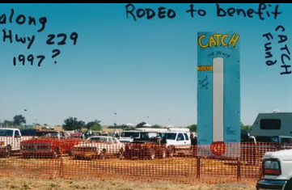

About the Community Center
Our Mission
To provide a safe, welcoming, and versatile space for the residents of Creston and the County at large. The Creston Community Center serves as the heart of our town … a dedicated gathering place for a myriad of events, celebrations, meetings, and fundraisers that bring friends, colleagues and neighbors together.
Our History
For decades, Creston didn't have a dedicated community center. In 1992, a group of devoted residents formed the C.A.T.C.H. (Creston Activities Town Center Helping Hands) Fund to change that, primarily with the founding of the Creston Classic Rodeo as a vehicle to raise funds for a future community center. No physical site was identified at the time. It was an inspiring concept that local organizations embraced, and continue to enthusiastically support, as a united force, including the Creston Classic Rodeo, Women's Club, Garden Club, Community Association, Volunteer Fire Department, and later the Men's Club, Community Advisory Body, 4-H and Friends of the Library under the C.A.T.C.H. umbrella.
For years, a hand-painted "Thermometer" billboard near Swayze and Highway 229 tracked the town's fundraising progress. The breakthrough finally came in the early 2010’s when the plan for building a new CAL FIRE station on Webster Rd. was put in place by SLO County. In 2012 the old pole-barn volunteer fire station site on Swayze Street became available to the community and locals quickly jumped on the opportunity to acquire a long-term lease from the County and begin the process of renovation.

The old volunteer fire station officially opened its doors as the “New” Creston Community Center in 2014. Through incredible community effort, multi-phase renovations, and generous donations (including major contributions from the Creston Classic Rodeo, private donors and grants obtained through the County and local philanthropic organizations) the facility has continued to see improvements, including a new exterior façade, a covered patio, landscaping, exterior artwork, new inside flooring, a catering room, sound proofing, new roofing, ADA-compliant bathrooms and walkways, and modern amenities (e.g. upgraded electrical, new indoor & outdoor lighting, HVAC, Wi-Fi, speakers and large screen Smart TV).
Committee & Operations
The Creston Community Center is a testament to what a small town can achieve when it works together. It is managed and maintained entirely by dedicated local volunteers through the C.A.T.C.H. organization, ensuring the building remains a community-operated asset for generations to come.